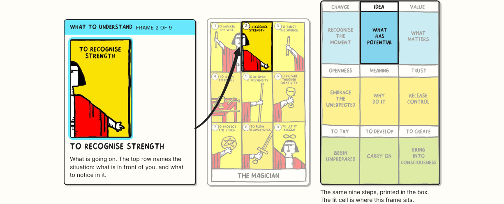
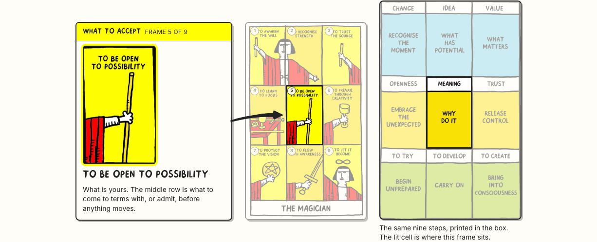
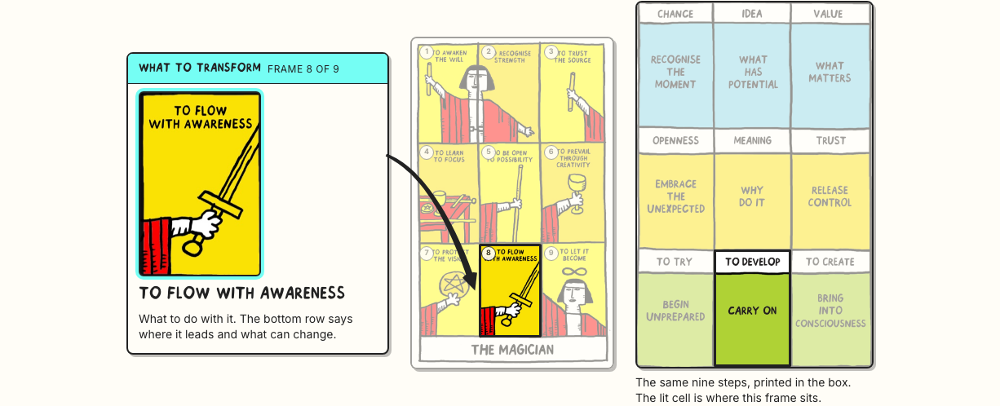
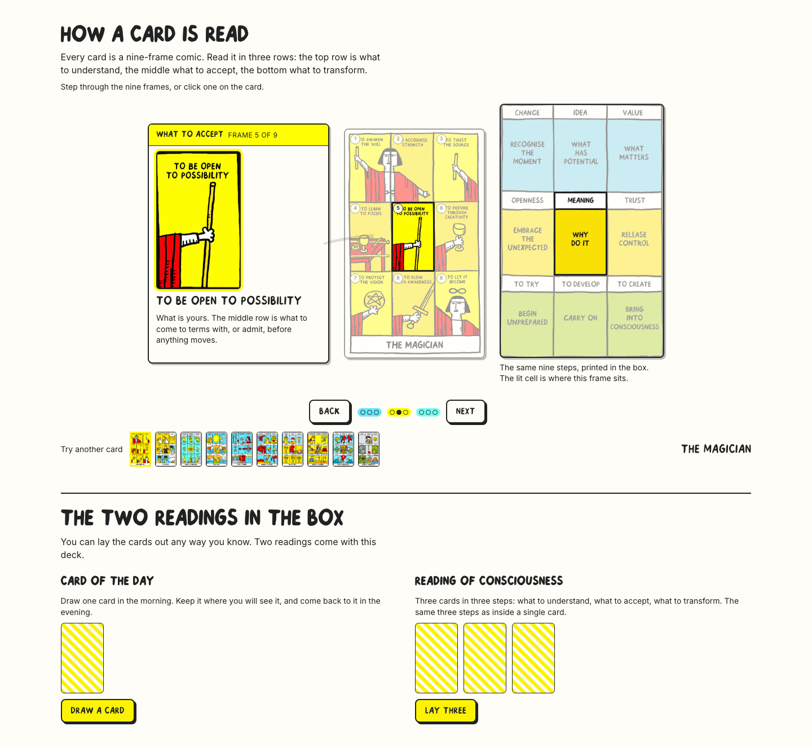
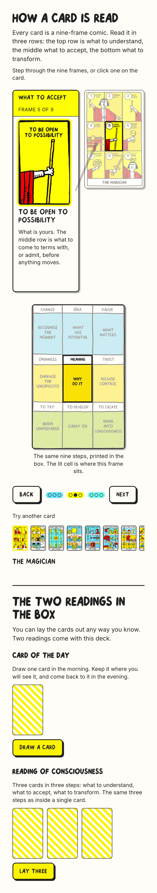
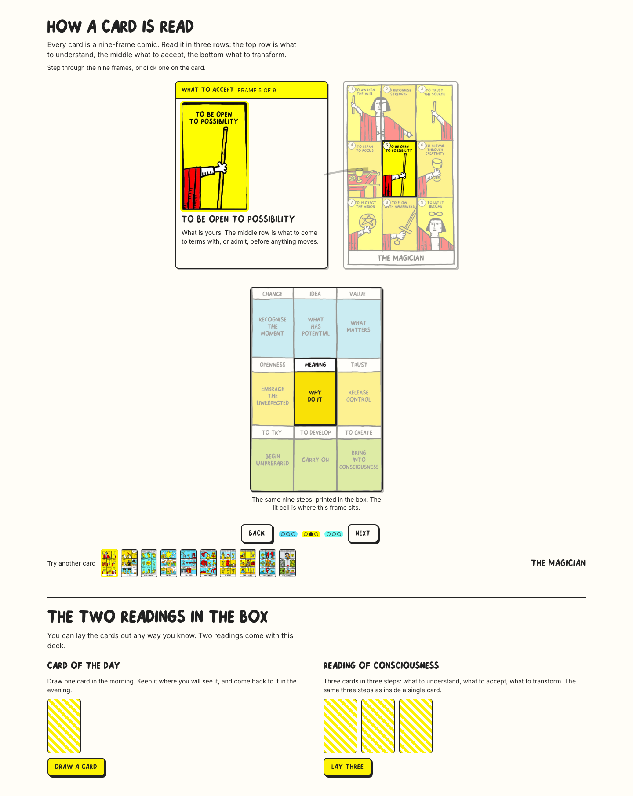
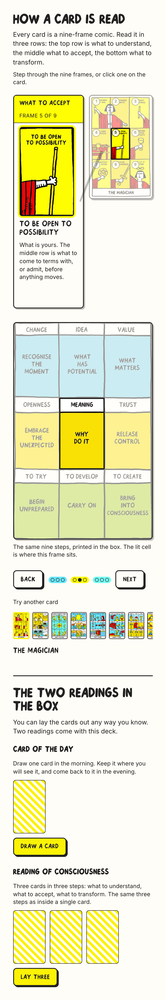

Two changes since the last round. The connector is now one drawn ink arrow — a tapered stroke with a real head — and it always starts from the same side. And the nine-frame path from the box is in the section as a map: step through the frames and the matching cell lights up, dimmed exactly like the card.
The shaft is a filled shape whose width grows from 3px to 7.5px along the curve, with a slight waver in the weight, the way a hand never keeps one pressure. The head is a separate piece with a concave back edge, and the shaft is cut back by exactly the head's length so the point lands where it should — 5px off the frame, at every width, measured.
The note stays on the left, the card on the right, on desktop and on the phone. Two reasons. An arrow pointing right reads as "goes to" — pointing left it reads as "comes back from", and every time the note switched sides the arrow reversed its meaning. And the eye moves left to right anyway: you read the enlarged frame and its explanation, then the arrow carries you to where it sits on the card. Fixing the side also means the layout never reshuffles as you step, which is why layout shift is now zero.
It leaves the note low and climbs for the top row, runs level for the middle row, and leaves high and falls for the bottom row. The head turns with it, so the gesture alone tells you the row before you read a word.



Cropped out of the print PDF: no title, no wordmark, no empty strip under the bottom row. The lit cell covers its
label and its colour block together, and everything else is dimmed with the same veil the card uses. Cell positions are
measured off the grid lines, so the highlight sits exactly on the cell at any size.
Files: nine-frame-path-grid.png 76 KB and .webp 91 KB at 900 × 1398, plus the full diagram with its
title and wordmark at 1400 × 2375. Details in docs/design/NINE-FRAME-PATH.md.
#69E7FD cyan,
#FFFE03 yellow and
#75FEF4 turquoise. The printed diagram uses a softer blue,
the same yellow, and a leaf green where the cards are turquoise. So on this one page the third row is turquoise on the
card and green in the diagram. Options: recolour the diagram to the card palette, leave both as they are and treat the
diagram as a printed object quoted as it is, or change the cards — which is out, they are going to print. Nothing has been
recoloured.




| A · map beside | B · map underneath | |
|---|---|---|
| 1440 × 900 — two readings start at | 874px (one screen) | 1358px |
| 390 × 844 — the note ends at | 722px (above the fold) | 722px |
| 390 — the map ends at | 1173px | 1307px |
| Arrow point to frame edge | 5px at 1440 and at 390 | 5px at 1440 and at 390 |
| Map cell follows all nine frames | pass | pass |
| Layout shift over eight steps | 0.0001 | 0.0001 |
| Nothing past the content edge · no horizontal scroll | pass | pass |
| Keyboard, reduced motion, Chromium + WebKit, EN + SK | pass | pass |
Still open from the last round: where the card picker lives. It is on the control bar here, with Back and Next.